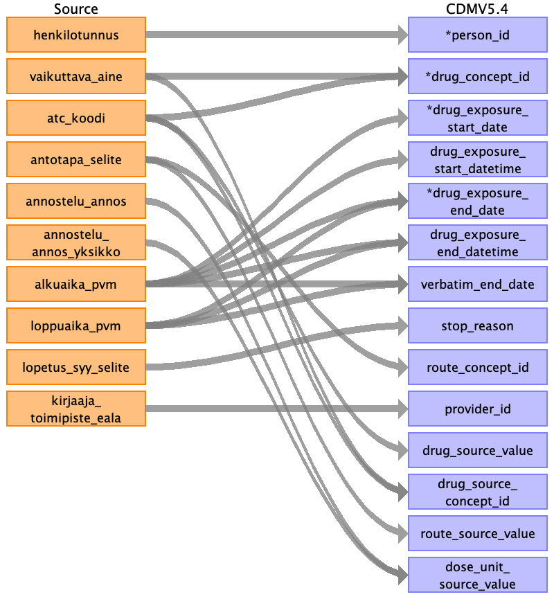
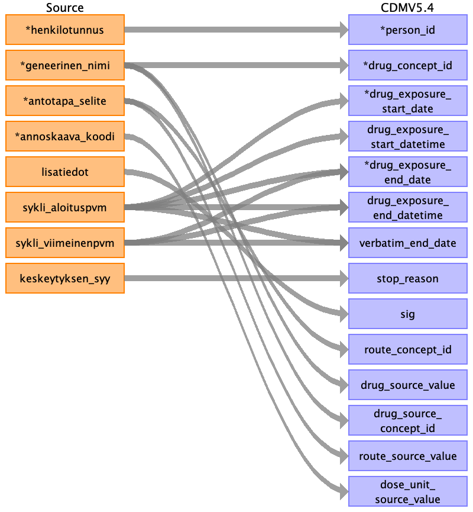

Table name: drug_exposure
Reading from clarity_laakitys
Only include rows for which person_id can be found and alkuaika_pvm is available.

| Destination Field | Source field | Logic | Comment field |
|---|---|---|---|
| drug_exposure_id | Generated automatically. | ||
| person_id | henkilotunnus | Join to mapping table to find person_id with the connected field. | |
| drug_concept_id | atc_koodi vaikuttava_aine |
Join to the mapping table using two vocabularies: ATC with atc_koodi and HUS-kemo-generic with vaikuttava_aine to find target_domain_id if available, otherwise use 0. | |
| drug_exposure_start_date | alkuaika_pvm | Use the connected field if available, else use NULL. | |
| drug_exposure_start_datetime | alkuaika_pvm | Use the connected field if available, else use NULL. | |
| drug_exposure_end_date | loppuaika_pvm alkuaika_pvm |
Use loppuaika_pvm if available, else use alkuaika_pvm. If neither is available, use NULL. | |
| drug_exposure_end_datetime | loppuaika_pvm alkuaika_pvm |
Use loppuaika_pvm if available, else use alkuaika_pvm. If neither is available, then use NULL. | |
| verbatim_end_date | alkuaika_pvm loppuaika_pvm |
Use loppuaika_pvm if available, else use alkuaika_pvm. If neither is available, then use NULL. | |
| drug_type_concept_id | Use standard: 32817 EHR. | ||
| stop_reason | lopetus_syy_selite | Use at most the first 20 characters from the connected field. | |
| refills | Use NULL. | ||
| quantity | Use NULL. | ||
| days_supply | Use NULL. | ||
| sig | Use NULL | ||
| route_concept_id | antotapa_selite | Joint to the mapping table using MedsRoute vocabulary with the connected field to find target_concept_id if available, otherwise use 0. | |
| lot_number | Use NULL. | ||
| provider_id | kirjaaja_toimipiste_eala | Joint ot the mapping table with the first word (the substring before the first space) of the connected field to find provider_id if available, otherwise use 0. | |
| visit_occurrence_id | Use NULL. | ||
| visit_detail_id | Use NULL. | ||
| drug_source_value | atc_koodi | Use at most the first 50 characters from the connected field. | |
| drug_source_concept_id | atc_koodi vaikuttava_aine |
Join to the mapping table using two vocabularies: ATC with atc_koodi and HUS-kemo-generic with vaikuttava_aine to find source_domain_id if available, otherwise use 0. | |
| route_source_value | antotapa_selite | Use at most the first 50 characters from the connected field. | |
| dose_unit_source_value | annostelu_annos annostelu_annos_yksikko |
Use at most the first 50 characters from the combination of annostelu_annos, '/', and annostelu_annos_yksikko. |
Reading from cressida_laakitys

| Destination Field | Source field | Logic | Comment field |
|---|---|---|---|
| drug_exposure_id | Generated automatically. | ||
| person_id | potilasnumero | Join to mapping table to find person_id with the connected field. | |
| drug_concept_id | atc_koodi | Join to the mapping table using two vocabularies: ATC with atc_koodi and HUS-kemo-generic with vaikuttava_aine to find target_domain_id if available, otherwise use 0. | |
| drug_exposure_start_date | alkuaika | Use the connected field if available, else use NULL. | |
| drug_exposure_start_datetime | alkuaika | Use the connected field if available, else use NULL. | |
| drug_exposure_end_date | loppuaika alkuaika |
Use loppuaika_pvm if available, else use alkuaika_pvm. If neither is available, use NULL. | |
| drug_exposure_end_datetime | loppuaika alkuaika |
Use loppuaika_pvm if available, else use alkuaika_pvm. If neither is available, then use NULL. | |
| verbatim_end_date | loppuaika | Use the connected field. | |
| drug_type_concept_id | Use standard: 32817 EHR. | ||
| stop_reason | laakemaarays_lopetus_syy_selite | Use at most the first 20 characters from the connected field. | |
| refills | Use NULL. | ||
| quantity | Use NULL. | ||
| days_supply | Use NULL. | ||
| sig | annostelu_eril_ohje | Concatenate the string 'annostelu_eril_ohje:' and the connected field, and use at most the first 8000 characters. | |
| route_concept_id | antotapa_selite | Joint to the mapping table using MedsRoute vocabulary with the connected field to find target_concept_id if available, otherwise use 0. | |
| lot_number | Use NULL. | ||
| provider_id | Use NULL. | ||
| visit_occurrence_id | Use NULL. | ||
| visit_detail_id | Use NULL. | ||
| drug_source_value | atc_koodi | Use at most the first 50 characters from the connected field. | |
| drug_source_concept_id | atc_koodi | Join to mapping table using ATC vocabulary with the connected field to find source_concept_id if available, otherwise use 0. | |
| route_source_value | antotapa_selite | Use at most the first 50 characters from the connected field. | |
| dose_unit_source_value | annostelu_annos_yksikko | Use at most the first 50 characters from the connected field. |
Reading from marela_pot_laakkeet
Only include rows for which person_id can be found.

| Destination Field | Source field | Logic | Comment field |
|---|---|---|---|
| drug_exposure_id | Generated automatically. | ||
| person_id | henkilotunnus | Join to mapping table to find person_id with the connected field. | |
| drug_concept_id | atc_koodi vaikuttava_aine |
Use target_concept_id from the mapping view OHDSI_VOCAB_MAP2. Primary mapping with ATC code (atc_koodi field, source vocabulary ATC), secondary mapping with the generic name of the effective ingredient (vaikuttava_aine field, source vocabulary HUS-kemo-generic). Exception: for the rows where vaikuttava_aine column contains 'kliiniset tutkimus' or 'solunsalpaaja'. The generic name of the effective ingredient is parsed from tuotenimi column. | |
| drug_exposure_start_date | toimitusaika | Use the connected field if available, else use NULL. | |
| drug_exposure_start_datetime | toimitusaika | Use the connected field if available, else use NULL. | |
| drug_exposure_end_date | toimitusaika | Use the connected field. | |
| drug_exposure_end_datetime | toimitusaika | Use the connected field. | |
| verbatim_end_date | toimitusaika | Use the connected field. | |
| drug_type_concept_id | Use standard: 32817 EHR. | ||
| stop_reason | Use NULL. | ||
| refills | Use NULL. | ||
| quantity | Use NULL. | ||
| days_supply | Use NULL. | ||
| sig | Use NULL | ||
| route_concept_id | Use NULL | ||
| lot_number | Use NULL. | ||
| provider_id | Use NULL. | ||
| visit_occurrence_id | Use NULL. | ||
| visit_detail_id | Use NULL. | ||
| drug_source_value | atc_koodi vaikuttava_aine tuotenimi |
Use atc_koodi if available. Otherwise, if vaikuttava_aine contains 'kliiniset tutkimus' or 'solunsalpaaja', then parse drug_source_value from tuotenimi, else use vaikuttava_aine. In all cases, use at most the first 50 characters. | |
| drug_source_concept_id | tuotenimi vaikuttava_aine |
Use target_concept_id from the mapping view OHDSI_VOCAB_MAP2. Primary mapping with ATC code (atc_koodi field, source vocabulary ATC), secondary mapping with generic name of the effective ingredient (vaikuttava_aine field, source vocabulary HUS-kemo-generic). | |
| route_source_value | Use NULL | ||
| dose_unit_source_value | Use NULL. |
Reading from kemokur
Only take rows for which the person exists in PERSON_ID_FOR_ASIAKAS table and sykli_aloituspvm is available.

| Destination Field | Source field | Logic | Comment field |
|---|---|---|---|
| drug_exposure_id | Generated automatically. | ||
| person_id | henkilotunnus | Join to mapping table to find person_id with the connected field. | |
| drug_concept_id | geneerinen_nimi | Join to mapping table using HUS-kemo-generic vocabulary with the connected field to find target_concept_id if available, otherwise use 0. | |
| drug_exposure_start_date | sykli_aloituspvm | Use the connected field if available, else use NULL | |
| drug_exposure_start_datetime | sykli_aloituspvm | Use the connected field if available, else use NULL. | |
| drug_exposure_end_date | sykli_viimeinenpvm sykli_aloituspvm |
Use sykli_viimeinenpvm if available, else use sykli_aloituspvm. If neither is available, use NULL. | |
| drug_exposure_end_datetime | sykli_viimeinenpvm sykli_aloituspvm |
Use sykli_viimeinenpvm if available, otherwise use sykli_aloituspvm. If neither is available, use NULL. | |
| verbatim_end_date | sykli_viimeinenpvm sykli_aloituspvm |
Use sykli_viimeinenpvm if available, otherwise use sykli_aloituspvm. If neither is available, use NULL. | |
| drug_type_concept_id | Use standard: 32817 EHR. | ||
| stop_reason | keskeytyksen_syy | Use at most the first 20 characters from the connected field. | |
| refills | Use NULL. | ||
| quantity | Use NULL. | ||
| days_supply | Use NULL. | ||
| sig | lisatiedot | Use at most the first 8000 characters from the connected field. | |
| route_concept_id | antotapa_selite | Joint to the mapping table using MedsRoute vocabulary with the connected field to find target_concept_id if available, otherwise use 0. | |
| lot_number | Use NULL. | ||
| provider_id | Use NULL. | ||
| visit_occurrence_id | Use NULL. | ||
| visit_detail_id | Use NULL. | ||
| drug_source_value | geneerinen_nimi | Use at most the first 50 characters from the connected field. | |
| drug_source_concept_id | geneerinen_nimi | Join to mapping table using HUS-kemo-generic vocabulary with the connected field to find source_concept_id if available, otherwise use 0. | |
| route_source_value | antotapa_selite | Use at most the first 50 characters from the connected field. | |
| dose_unit_source_value | annoskaava_koodi | Use at most the first 50 characters from the connected field. |
Reading from kemokur_oheislaakkeet
Only take rows for which the person exists in PERSON_ID_FOR_ASIAKAS table, the corresponding potilaan_hoitokuuri_numero exists in KEMOKUR table, and KEMOKUR.sykli_aloituspvm is available.

| Destination Field | Source field | Logic | Comment field |
|---|---|---|---|
| drug_exposure_id | Generated automatically. | ||
| person_id | henkilotunnus | Join to mapping table to find person_id with the connected field. | |
| drug_concept_id | geneerinen_nimi | Join to mapping table using HUS-kemo-generic vocabulary with the connected field to find target_concept_id if available, otherwise use 0. | |
| drug_exposure_start_date | potilaan_hoitokuuri_numero | Join to KEMOKUR with the connected field and use KEMOKUR.sykli_aloituspvm if available, else use NULL. | |
| drug_exposure_start_datetime | potilaan_hoitokuuri_numero | Join to KEMOKUR with the connected field and use KEMOKUR.sykli_aloituspvm if available, else use NULL. | |
| drug_exposure_end_date | potilaan_hoitokuuri_numero | Join to KEMOKUR with the connected field and use KEMOKUR.sykli_viimeinenpvm if available, else use use KEMOKUR.sykli_aloituspvm. If neither is available, use NULL. | |
| drug_exposure_end_datetime | potilaan_hoitokuuri_numero | Join to KEMOKUR with the connected field and use KEMOKUR.sykli_viimeinenpvm if available, else use use KEMOKUR.sykli_aloituspvm. If neither is available, use NULL. | |
| verbatim_end_date | potilaan_hoitokuuri_numero | clarity_laakitys: Join to KEMOKUR with the connected field and use KEMOKUR.sykli_viimeinenpvm if available, else use use KEMOKUR.sykli_aloituspvm. If neither is available, use NULL. | |
| drug_type_concept_id | Use standard: 32817 EHR. | ||
| stop_reason | Use NULL. | ||
| refills | Use NULL. | ||
| quantity | Use NULL. | ||
| days_supply | Use NULL. | ||
| sig | lisatiedot | Use at most the first 8000 characters from the connected field. | |
| route_concept_id | antotapa_selite | Joint to the mapping table using MedsRoute vocabulary with the connected field to find target_concept_id if available, otherwise use 0. | |
| lot_number | Use NULL. | ||
| provider_id | Use NULL. | ||
| visit_occurrence_id | Use NULL. | ||
| visit_detail_id | Use NULL. | ||
| drug_source_value | geneerinen_nimi | Use at most the first 50 characters from the connected field. | |
| drug_source_concept_id | geneerinen_nimi | Join to mapping table using HUS-kemo-generic vocabulary with the connected field to find source_concept_id if available, otherwise use 0. | |
| route_source_value | antotapa_selite | Use at most the first 50 characters from the connected field. | |
| dose_unit_source_value | Use NULL. |